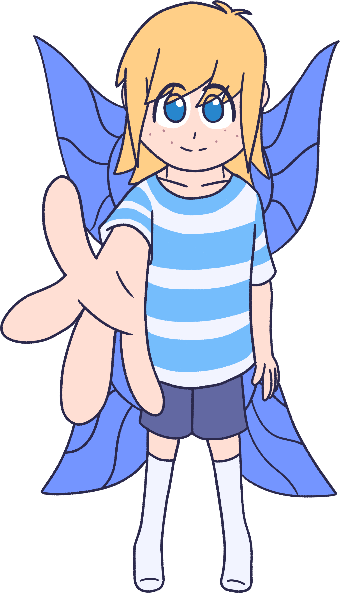

|
Oh, you clicked here!
Sorry, I'm just a little surprised. Why'd you click on me?
Well, I guess since you have clicked here, I'll tell a little about me!!!
I'm a silly little person who does rather stupid things sometimes.
I've been making Spore mods for quite a long time.
Actually, I don't even remember when, but it's likely almost half my life at this point.
Currently I'm studying computer science in university.
I have ADHD and autism, so please keep in mind that I can be a bit uh. Temperamental.
There's like 20 different in-progress projects I have that I've not touched in ages...
And, my character is a fairy, about 6.57 inches tall- the height of a Tesco water bottle!
|
 |
Interets
Obviously, Spore is one of my big interests.
I love Spore.
Outside of that though, I'm into retro hardware and software, and computer science as a whole.
Programming is an artform, and one that I like partaking in!
Of course, I also draw. I draw a decent bit, it's super fun and relaxing.
Spore modding is obviously one interest of mine, but I also like watching anime; my favourite show is CITY: The Animation!
|